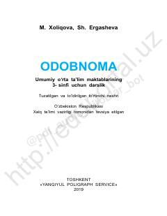

O33-sinf o'quvchilari uchun odob-axloq qoidalari va Vatan tuyg'usini o'rgatuvchi darslik.
Ushbu darslik umumiy o'rta ta'lim maktablarining 3-sinf o'quvchilari uchun mo'ljallangan bo'lib, odob-axloq qoidalari, Vatan tuyg'usi va insoniy fazilatlarni shakllantirishga qaratilgan. Kitobda o'quvchilarning oila, jamiyat va Vatan oldidagi burchlari, shuningdek, buyuk ajdodlarimiz merosi haqida ma'lumotlar berilgan.